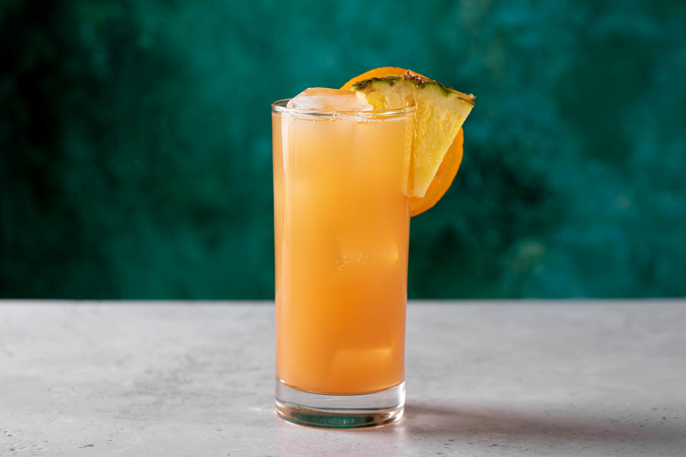

Fruity Mocktail
Description
Make this fruit-flavoured mocktail with grenadine and orange juice to serve as a non-alcoholic drink option at a family party. It's more fun with grape and blueberry stirrers that double as a snack
Ingredients
- handful of green grapes
- handful of blueberries
- 4 tbsp grenadine
- 300-400ml orange juice
- sparkling water, to top up
Steps
- STEP 1 - Thread the grapes and blueberries onto the skewers to make stirrers.
- STEP 2 - Pour the grenadine into four glasses. Gently tip the glasses and pour the orange juice down the inside of the glasses so it sits on top of the grenadine. Top up with sparking water, and add the stirrers to serve.